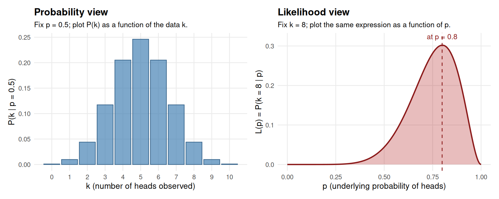
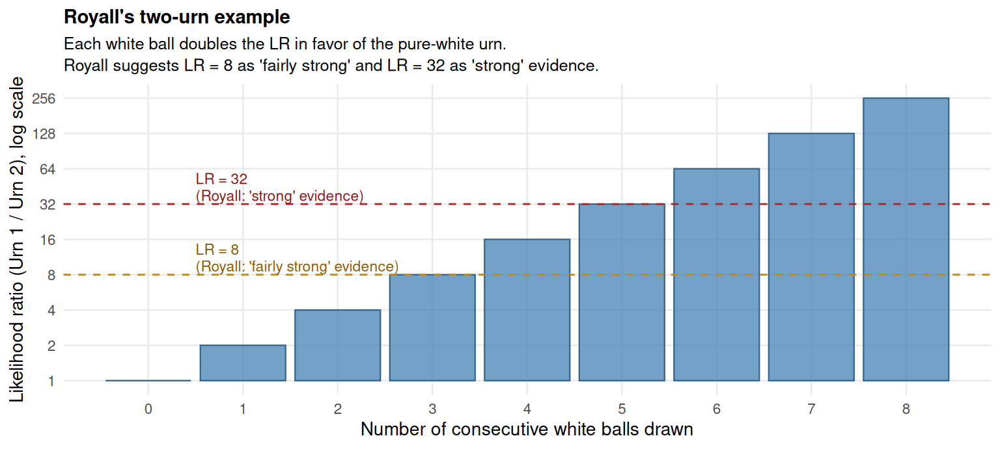
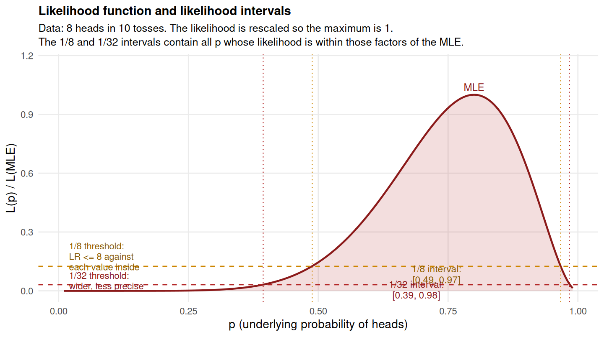
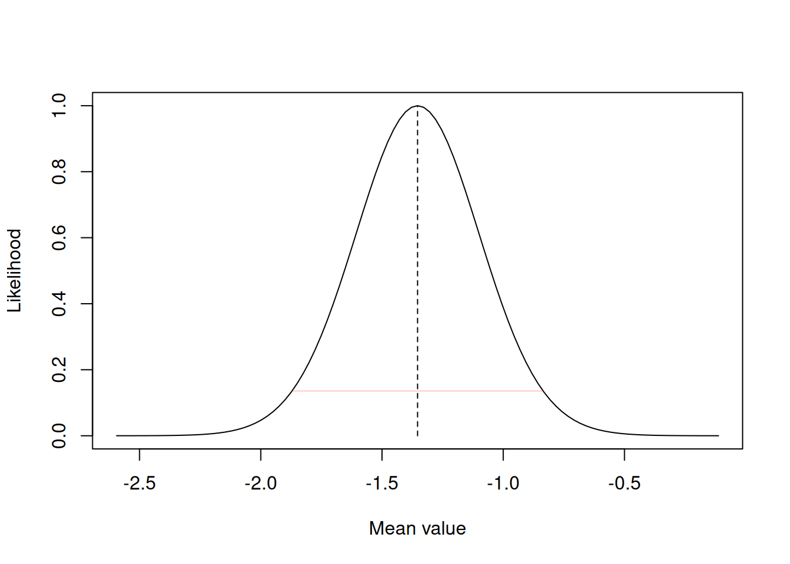

29 Likelihoodism, briefly (optional)
29.1 Why this chapter is optional
Chapters 26, 27, and 28 walked through the three big frameworks for statistical inference: Neyman-Pearson (calibrated decisions), Fisher and the new statistics (continuous evidence and estimation), and Bayesian inference (degrees of belief). There is a fourth framework that gets less attention in psychology but that some methodologists argue is the cleanest of the lot for a specific kind of question. It is called likelihoodism, sometimes the evidential approach, and Zloteanu (2024) calls it “the secret third way” (with Bayesian inference as the much more familiar second way to NP’s first).
This chapter is optional and deliberately brief. The goal is to give you enough vocabulary to recognize the approach when you encounter it in the literature, to understand what question it is built to answer, and to do a basic likelihood-ratio analysis in R. For a deeper treatment, see Royall (1997), Dienes (2008, Chapter 5), and Lakens (2022, Chapter 3). For a hands-on R-focused tutorial, the Zloteanu (2024) substack post walks through a worked example with the likelihoodR package.
The chapter has seven substantive sections, plus the closing exercises. Section 29.2 distinguishes the likelihood from the probability. Section 29.3 introduces the law of likelihood. Section 29.4 develops Royall’s two-urn intuition for the likelihood ratio. Section 29.5 introduces the likelihood function and likelihood intervals. Section 29.6 catalogues what makes the likelihood approach attractive: insensitivity to stopping rules, multiple testing, and the planned-vs-post-hoc distinction. Section 29.7 catalogues the limitations. Section 29.8 walks through a basic R implementation using likelihoodR. Section 29.9 contains the MCQs.
29.2 Probability and likelihood: two views of one formula
The likelihood concept is built on a deceptively simple distinction that took statistics a long time to clarify. A probability and a likelihood are computed from the same formula, but they are read from different angles.
Consider a coin tossed 10 times. The probability of observing exactly k heads given that the underlying probability of heads is p is given by the binomial formula:
\[ P(k \mid p) = \binom{n}{k} \, p^k \, (1-p)^{n-k} \]
We can read this formula in two completely different ways depending on what we treat as fixed.
Reading 1 (probability). Fix p (say, p = 0.5 for a fair coin). Then P(k | p) is the probability of each possible number of heads we might observe. It is a function of k, the data. Sum it across all possible values of k and you get 1.
Reading 2 (likelihood). Fix the observed data (say, 8 heads in 10 tosses). Then P(k | p) is no longer a probability of the data; the data is fixed. Instead, we now read the same formula as a function of p, asking: how likely was the observed data under each possible value of p? This is the likelihood function, written L(p), and it does not sum to 1 across values of p. The likelihood is not a probability of p; it is the probability of the observed data, viewed as a function of p.
The figure below makes the distinction visible. The same binomial formula is plotted twice. On the left, we fix p = 0.5 and plot P(k | p) as a function of k (the data). On the right, we fix k = 8 (observed heads) and n = 10 and plot L(p) = P(k = 8 | p) as a function of p (the parameter).
The same formula generates both pictures. The two pictures answer different questions:
- The probability view answers: “Assuming the coin is fair, how often would I see each possible number of heads?” The data is the unknown.
- The likelihood view answers: “Having observed 8 heads in 10 tosses, how compatible is each possible underlying p with my observation?” The parameter is the unknown.
A practical implication: the likelihood by itself has no absolute interpretation. The number L(p = 0.8) = 0.30 in the right panel is not a probability of p = 0.8. It is the probability of the data, given that p = 0.8 were true. You cannot compare L(p) against an absolute scale and say “this is large” or “this is small.” You can only compare L(p) against L at other values of p. As Dienes (2008, pp. 86-87) puts it, “the likelihood itself has no meaning in isolation.”
This means that any inferential use of the likelihood involves comparing two likelihoods. That comparison is the likelihood ratio, and it is the central object of likelihoodism.
29.3 The law of likelihood
Likelihoodism is built on one principle, the law of likelihood, attributed to Ian Hacking (1965) and developed by Royall (1997):
The observed data favor one hypothesis over another to the extent that the likelihood of the data under the first hypothesis is greater than the likelihood of the data under the second.
In symbols: the likelihood ratio
\[ LR_{1 \text{ vs } 2} = \frac{L(H_1)}{L(H_2)} = \frac{P(D \mid H_1)}{P(D \mid H_2)} \]
measures the relative strength of evidence the data provide for \(H_1\) over \(H_2\). If \(LR = 1\), the data are equally compatible with both hypotheses; the data provide no evidence either way. If \(LR > 1\), the data favor \(H_1\). If \(LR < 1\), the data favor \(H_2\). The further \(LR\) is from 1 (in either direction), the stronger the relative evidence.
Three features of this definition are worth flagging.
It is relative. The likelihood ratio compares two specific hypotheses; it does not say either of them is true. Even a \(LR\) of a million in favor of \(H_1\) over \(H_2\) leaves open the possibility that some third hypothesis \(H_3\) would have made the data more likely still. Lakens (2022, Figure 3.7) gives a vivid example: with 50 heads in 100 flips, the likelihood ratio for \(p = 0.3\) over \(p = 0.8\) is around 800 000, which sounds overwhelming, but \(p = 0.5\) would have been even more compatible with the data. Always frame likelihood-ratio conclusions as “relative to” the specific alternatives being compared.
It is the same form as the Bayes factor without a prior. Recall from Chapter 28 that the Bayes factor was the ratio of marginal likelihoods of the data under two models. If both models are point hypotheses (no priors over parameters), the Bayes factor reduces to the likelihood ratio. The likelihoodist position is essentially: report the likelihood ratio (the evidence in the data) and let the reader bring their own prior. This is what makes likelihoodism a “third way”: it shares Bayesianism’s focus on relative evidence between specific hypotheses, but refuses to mix in a prior the way Bayesian inference does.
It is silent about decisions and beliefs. The law of likelihood is built to answer Royall’s third question, “how should I treat these data as evidence for one hypothesis over another?” It does not tell you what to do (the NP question) or what to believe (the Bayesian question). Whether to act on a particular \(LR\), and whether to believe a particular hypothesis after seeing a particular \(LR\), are separate steps that the framework does not provide. As the likelihoodists Taper and Lele (cited in Lakens 2022, §3) put it, “we do not care what you believe, we barely care what we believe; what we are interested in is what you can show.”
29.4 Royall’s two-urn intuition
Royall (1997) gives a single example that does most of the conceptual work for the law of likelihood. It is worth working through carefully.
Imagine two urns sitting side by side. Urn 1 contains only white balls. Urn 2 contains an equal mixture of white and black balls. One urn is chosen (say, by a coin toss) and a single ball is drawn from it. The ball is white. What does this observation tell us?
Compute the likelihoods. The probability of drawing a white ball given that the urn is the pure-white urn is \(P(\text{white} \mid \text{Urn 1}) = 1\). The probability of drawing a white ball given that the urn is the mixed urn is \(P(\text{white} \mid \text{Urn 2}) = 0.5\). The likelihood ratio in favor of Urn 1 over Urn 2 is \(1 / 0.5 = 2\). The data favor Urn 1 by a factor of 2.
A factor of 2 is weak evidence. We have one observation; the white ball is consistent with both urns; the urn we chose was equally likely to be either to start with; the verdict is appropriately mild. Now suppose we draw not one ball but three, all white. The likelihood under Urn 1 is \(1 \times 1 \times 1 = 1\). The likelihood under Urn 2 is \(0.5 \times 0.5 \times 0.5 = 0.125\). The likelihood ratio is \(1 / 0.125 = 8\). The data now favor Urn 1 by a factor of 8.

The intuition the figure provides is that each consecutive white ball doubles the evidence in favor of the pure-white urn. After 3 white balls in a row, we have \(LR = 8\); after 5 white balls, \(LR = 32\). Royall’s calibration is anchored on this intuition: if drawing 3 white balls in a row from the pure-white urn feels like “fairly strong” evidence that this is indeed the pure-white urn, then any \(LR = 8\) in any context should feel similarly strong. Drawing 5 white balls in a row feels like “strong” evidence; that anchors \(LR = 32\). These benchmarks (\(LR = 8\) for fairly strong, \(LR = 32\) for strong) are the likelihoodist analogues of Cohen’s d benchmarks: useful as anchors, but not as decision rules.
The two-urn example is small but it does several things at once. It shows that the likelihood ratio is naturally on a multiplicative scale: each new observation multiplies the existing \(LR\), so independent observations combine cleanly. It shows that the framework is naturally on a relative-evidence footing: we never claim “Urn 1 is the urn”; we only claim “the data favor Urn 1 over Urn 2 by a factor of X.” And it gives intuition for the relevant magnitudes: \(LR = 2\) is barely worth mentioning, \(LR = 8\) is fairly strong, \(LR = 32\) is strong.
29.5 The likelihood function and likelihood intervals
The likelihood ratio compares two specific hypotheses. But often we want to ask not “is p = 0.5 or p = 0.8?” but rather “what is p, with what uncertainty?” The likelihoodist tool for this is the likelihood function (the right-hand panel of figure 29.1) together with the likelihood interval.
A 1/8 likelihood interval is the set of all parameter values whose likelihood is at least 1/8 of the maximum. In words: the interval contains all parameter values for which no other value within it has more than fairly strong evidence (\(LR = 8\)) against. Values outside the interval are at least 8 times less likely than the maximum-likelihood value. A 1/32 likelihood interval applies the same logic with strong evidence (\(LR = 32\)) as the threshold.
The figure below shows the likelihood function for 8 heads in 10 coin tosses, with the 1/8 and 1/32 likelihood intervals marked.

The 1/8 interval here runs from about p = 0.50 to p = 0.97 and the 1/32 interval from about p = 0.43 to p = 0.99. The interpretation is precise but unfamiliar. The 1/8 interval contains the values of p for which no other value within it is more than 8 times better supported by the data. Outside the interval, every value is at least 8 times less likely than the maximum. The interval is not a 95% confidence interval, not a 95% credible interval; it is its own kind of object, defined directly by the law of likelihood.
A useful (and slightly surprising) numerical fact: for normally distributed data with known variance, the 1/8 likelihood interval coincides approximately with the uncorrected 96% confidence interval, and the 1/32 likelihood interval with the uncorrected 99% confidence interval (Dienes 2008, p. 131). The widths happen to agree, even though the interpretations are completely different.
29.6 What makes likelihoodism attractive
The most distinctive features of likelihoodism are its insensitivities. The likelihood ratio depends only on the observed data and the two hypotheses being compared. It does not depend on several things that the Neyman-Pearson framework cares deeply about. We catalogue them, because they are the practical attractions of the framework.
Insensitivity to stopping rules. Suppose two researchers run identical studies but have different stopping rules: one decides in advance to test exactly 30 patients, the other decides in advance to test until 6 patients improve. They end up with the same data: 6 improvements out of 30 patients. In the Neyman-Pearson framework, these two researchers should compute different p-values, because the reference distributions for their procedures differ; the data are the same but the inferential conclusions diverge (Chapter 25). In the likelihoodist framework, the likelihood ratio depends only on the actually observed data, not on the stopping rule that generated them. Both researchers get the same answer.
Insensitivity to multiple testing. Suppose you ran 20 t-tests in your study and the one comparing condition A to condition B yields a likelihood ratio of 10 in favor of an effect. In NP, you would need to correct the p-value for the family of 20 tests, possibly dropping the result below significance. In likelihoodism, the likelihood ratio for the specific A-versus-B comparison depends only on the A and B data and the two hypotheses; the fact that you ran 18 other unrelated tests does not change the evidence the A-versus-B data provide for that specific comparison.
Insensitivity to the planned/post-hoc distinction. A likelihood ratio computed on a post-hoc hypothesis is mathematically the same quantity as a likelihood ratio computed on a pre-specified one. The framework does not have a built-in penalty for HARKing in the way NP does. Whether this is a feature or a problem we discuss in the next section.
Independence of priors. Unlike Bayesian inference, likelihoodism does not require specifying a prior. The likelihood ratio is purely a function of the data and the two hypotheses. This makes it more “objective” in the colloquial sense; two analysts who agree on the data and the hypotheses must agree on the LR, where two Bayesians might disagree because their priors differ.
Bounded probability of misleading evidence. A classic result (Birnbaum 1962, cited in Dienes 2008, p. 129) shows that the probability of observing a likelihood ratio of k in favor of the wrong hypothesis is bounded above by \(1/k\), even with an infinite number of observations. If you commit to an evidence threshold of \(LR = 8\), the probability that you will ever see misleading evidence of that strength is at most \(1/8\). With normally distributed data this bound is much tighter still (about 0.02). This is a strong calibration claim that holds in the limit of infinite data, unlike NP’s α which is fixed regardless of sample size.
The combination of these features makes the likelihoodist framework attractive to researchers who find the NP framework’s sensitivity to procedural details uncomfortable (Why should my conclusion depend on what I intended to do but did not?) and the Bayesian framework’s reliance on priors uncomfortable (Why should my conclusion depend on what someone else believed before the data?). The Zloteanu (2024) post is unusually clear on this combination of advantages.
29.7 Weaknesses
The same insensitivities that make likelihoodism attractive also expose its limitations.
Likelihood ratios are always relative. The framework can tell you the relative evidence for \(H_1\) over \(H_2\), but it cannot say anything about whether \(H_1\) or \(H_2\) is right in any absolute sense. Both could be wrong and a third hypothesis we did not consider could be the truth. The Lakens (2022, section 3.1) example of \(LR \approx 800{,}000\) for \(p = 0.3\) over \(p = 0.8\) when the data actually favor \(p = 0.5\) is a sharp illustration: the LR was correctly reporting the relative evidence between the two specific hypotheses, but neither hypothesis was the best-supported value of p.
The framework does not control error rates in decisions. If you use a likelihood-ratio threshold (say \(LR \geq 8\)) as a decision rule, the framework has no built-in calibration of the long-run rate at which the rule will misclassify hypotheses. The 1/k bound on misleading evidence is a different and weaker calibration than NP’s α. If you need decisions with strictly controlled long-run error rates (drug approval, regulatory decisions), the likelihoodist framework on its own is not the right tool.
The insensitivity to multiple testing is double-edged. It is attractive when you genuinely want to ask “what does the A-versus-B comparison tell me, regardless of how many other comparisons I ran?” It is dangerous when the practical effect is to legitimize cherry-picking. If you ran 20 comparisons and report only the one with the highest LR, you have selected on a quantity that varies with the data, and the LR’s interpretation as evidence for the specific comparison is undermined by the selection. The framework does not have a built-in correction; you have to commit not to cherry-pick by other means, such as pre-registration.
The insensitivity to planning and HARKing is also double-edged. A likelihood ratio computed on a pre-specified hypothesis is mathematically the same quantity as one computed post hoc, which is attractive for exploratory work but dangerous for the same reasons HARKing was dangerous in Chapter 25. The framework does not penalize hypothesis-fishing in the same way NP does.
Adoption is low. Compared to NP, Fisher, and Bayesian methods, likelihoodism is rarely seen in published psychology papers. Available R packages (likelihoodR, the Jamovi jeva module) cover only a small range of standard analyses. For complex designs (multilevel models, structural equation models), likelihoodist tools do not exist; you have to translate the analysis into a likelihood-ratio framework by hand or via custom code. Practical work in many areas of psychology is constrained by what software is available, and likelihoodism is not where the software effort has gone.
A reasonable summary, consistent with the position taken throughout Section 4. Likelihoodism is the cleanest framework if your only question is “what does the data say about \(H_1\) versus \(H_2\), treating these as the only two hypotheses?” If your question requires calibrated decisions (NP), or beliefs (Bayes), or careful handling of selection effects (any framework), the likelihoodist tools on their own are not enough. Most working researchers will not adopt likelihoodism as a primary framework, but recognizing the law of likelihood and being able to compute and interpret a likelihood ratio is a useful addition to your statistical vocabulary.
29.8 Doing it in R: a worked example
The likelihoodR package (Cahusac, 2023) provides likelihood-ratio versions of common tests. We illustrate it on the vgames_study aggression comparison we have used throughout Chapters 27 and 28.
vgames <- read.csv("data/vgames_study.csv")We can run a likelihoodist independent-samples t-test, specifying a single-value alternative hypothesis (here, d = 0.5, a moderate effect) and asking for the likelihood ratio against the null of zero difference.
library(likelihoodR)
violent_scores <- vgames$aggression[vgames$condition == "violent"]
neutral_scores <- vgames$aggression[vgames$condition == "neutral"]
L_ttest(violent_scores, neutral_scores,
null = 0, # H0: zero population difference
d = 0.5, # H1: standardized effect of 0.5
L.int = 2, # report the 1/e^2 = 1/7.39 ~ 1/8 interval
verb = FALSE)
$obs.diff
[1] -1.353333
$df
[1] 59
$alt.H1
[1] 0.9949647
$alt.H2
NULL
$S_max
[1] 11.56529
$S_10
[1] -14.90083
$S_12
NULL
$S_20
NULL
$like.int
[1] -1.8714420 -0.8352246
$L.int.spec
[1] 2
$null.value
[1] 0
$t.val
[1] 5.267963
$p.val
[1] 2.037545e-06
$d.obs
[1] -0.6800911The output reports several quantities. The maximum support against the null is the log of the likelihood ratio comparing the MLE (the best-supported value, here the sample mean difference) against the null of zero. A maximum support of about 8 corresponds to a likelihood ratio of \(e^8 \approx 2{,}981\), which is well above Royall’s “strong” threshold of 32. The support for d = 0.5 is the log of the likelihood ratio comparing the specified alternative (a moderate effect) against the null; a support of about 6 corresponds to \(LR \approx 403\), again above the “strong” threshold but less dramatic than the MLE-vs-null comparison. The S-2 likelihood interval (sometimes written 1/e^2 ≈ 1/7.4, close to Royall’s 1/8) gives the range of mean differences that are not more than ~7.4 times worse supported than the MLE; here, this is roughly 0.84 to 1.86 raw aggression units.
The interpretation, in likelihoodist terms: the data provide very strong evidence for the violent-versus-neutral difference being non-zero, with the best-supported magnitude being around 1.3 to 1.4 aggression-scale points, and any value within roughly [0.84, 1.86] not more than fairly strong evidence away from the best-supported value. Note that the package also reports the conventional t-test result (with t, p, and Cohen’s d) for comparison, but the likelihoodist interpretation does not depend on the p-value.
For sample-size planning in the likelihoodist framework, the package provides L_t_test_sample_size():
L_t_test_sample_size(
MW = 0.20, # probability of misleading or weak evidence (~ Type II error analogue)
sd = 1,
d = 0.5, # smallest effect size of interest
S = 2 # support threshold (~ LR = e^2 = 7.4)
)
For independent samples t test with M1 + W1 probability of 0.2
Strength of evidence required is 2, and effect size of 0.5
Required total sample size (n1 + n2) = 76
Required total sample size:
$N
[1] 76
$S
[1] 2
$sd
[1] 1
$d
[1] 0.5
$m1.w1
[1] 0.2The function returns the sample size needed for the desired probability of misleading-or-weak evidence (the likelihoodist analogue of statistical power). The Zloteanu (2024) post discusses this in detail and provides a worked example with full pre-registration considerations.
For most psychology applications, you will not start with likelihoodR. The framework is most useful as a complement to whatever primary analysis you are running: if you are reporting a t-test, computing the corresponding likelihood ratio adds the relative-evidence reading to your output, and the cost is minimal once the data are in R.
29.9 Check your understanding
1. What is the relationship between a probability and a likelihood?
2. What does the law of likelihood state?
3. In Royall’s two-urn intuition, what does a likelihood ratio of 8 in favor of H1 mean?
4. How should a 1/8 likelihood interval be interpreted?
5. How does the likelihood ratio respond to the experimenter’s stopping rule?
6. How does the likelihoodist framework relate to the Bayesian and Neyman-Pearson frameworks in terms of the question it is designed to answer?
7. What is one important weakness of the likelihoodist framework that researchers should be aware of?
29.10 References
Birnbaum, A. (1962). On the foundations of statistical inference. Journal of the American Statistical Association, 57(298), 269-306. https://doi.org/10.1080/01621459.1962.10480660
Cahusac, P. M. B. (2023). Log likelihood ratios for common statistical tests using the likelihoodR package. The R Journal, 14(3), 203-213. https://doi.org/10.32614/RJ-2023-024
Dienes, Z. (2008). Understanding psychology as a science: An introduction to scientific and statistical inference. Palgrave Macmillan.
Hacking, I. (1965). Logic of statistical inference. Cambridge University Press. https://doi.org/10.1017/CBO9781316534960
Lakens, D. (2022). Improving your statistical inferences. https://lakens.github.io/statistical_inferences/
Royall, R. (1997). Statistical evidence: A likelihood paradigm. Chapman & Hall. https://doi.org/10.1201/9780203738665
Zloteanu, M. (2024, July 3). A secret third way: Likelihoodist statistics. Figuring Stuff Out. https://mzloteanu.substack.com/p/a-secret-third-way-likelihoodist